Разработка и выполнение программы с использованием разветвлений и вложенных циклов
Выполнить задания (см. ниже). Файлы с выполненными заданиями сохранять в личной папке в каталоге pr10. В имени проекта (проектов) указать номер ПЗ.
Оформить в MS Word отчет о практической работе, включающий:
- тему практической работы
- цель работы
- задание 1 (условие)
- блок-схему алгоритма решения задания 1
- листинг программы задания 1 (стиль
Программный кодсо шрифтомCourier New) - результат выполнения программы задания 1 (скриншот, аккуратно обрезанный)
- выводы по работе
... и так для каждого задания ...
Отчет распечатать и представить при защите ПР.
Задания
Задание 1. Изобразить блок-схему алгоритма и составить программу решения задачи:
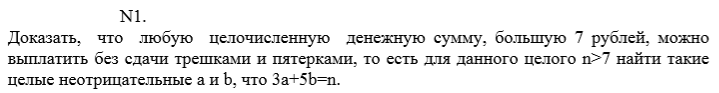
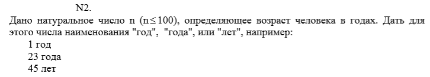
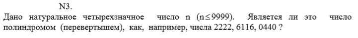
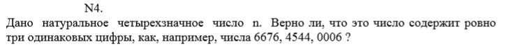
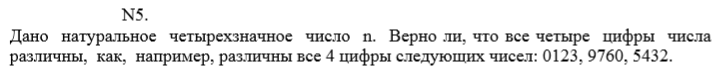
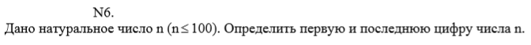
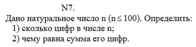
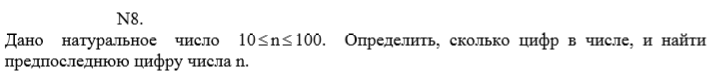
 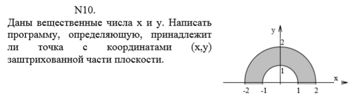
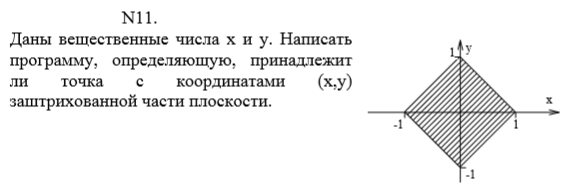
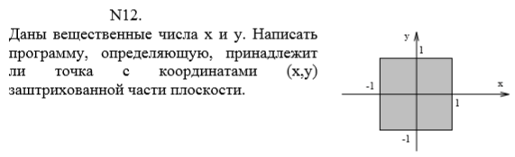
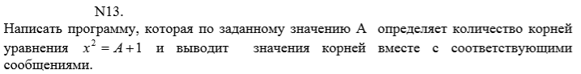
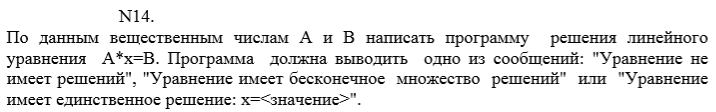
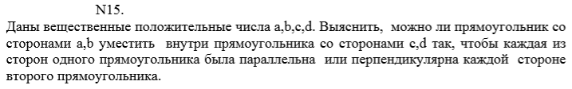
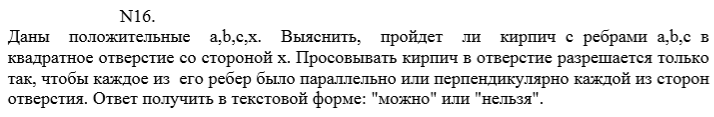
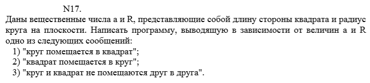
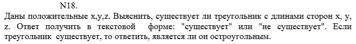
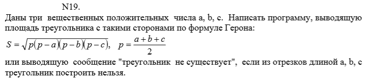
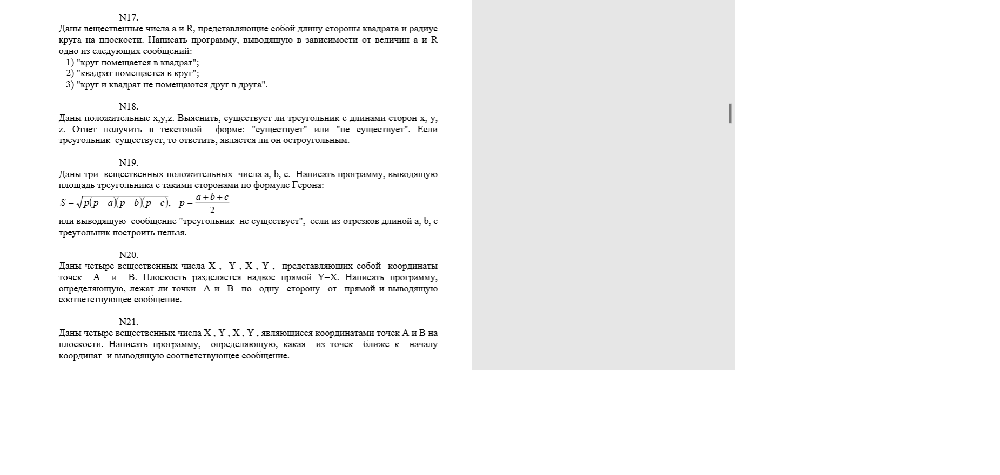
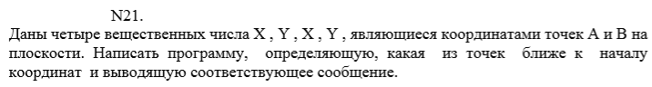
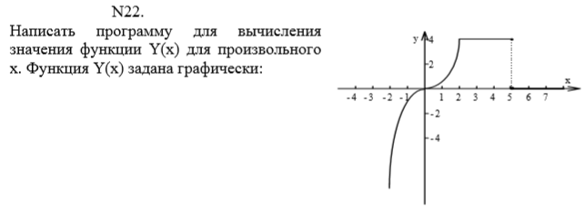
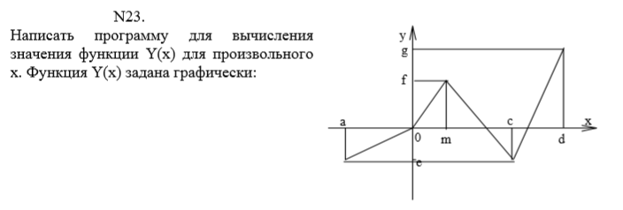
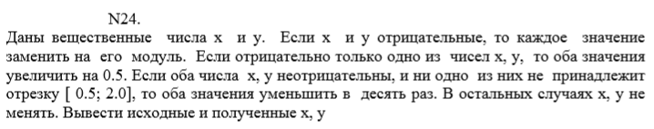
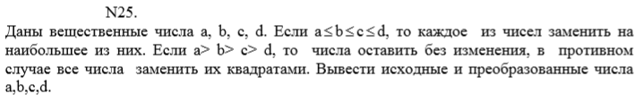
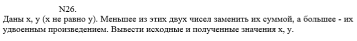
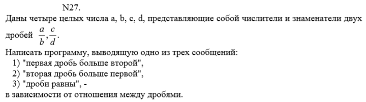
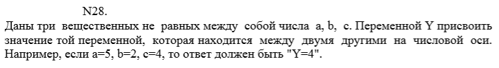
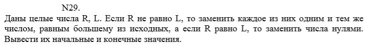
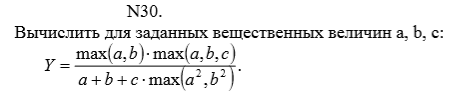
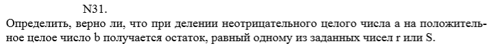
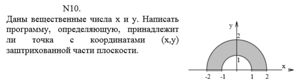
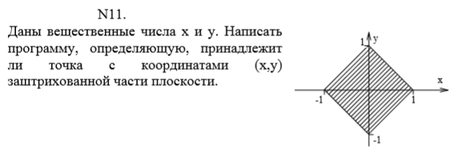
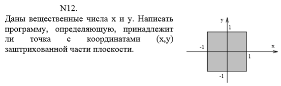
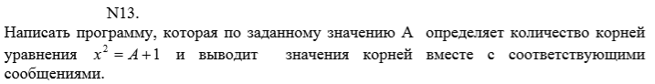
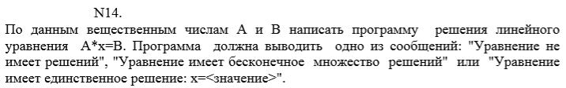
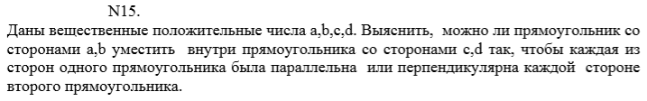
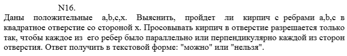
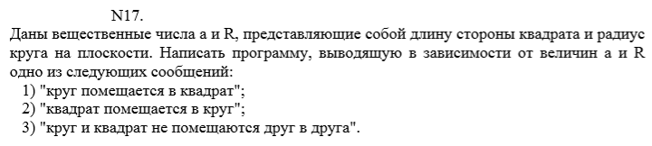
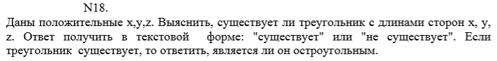
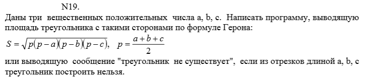
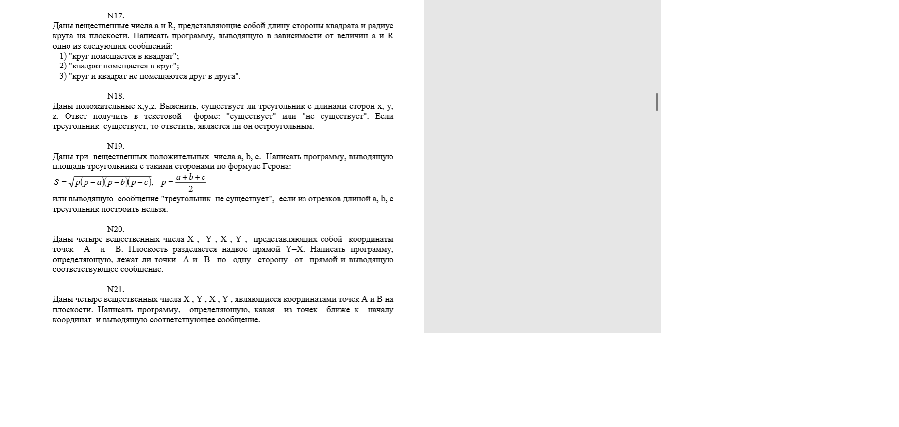
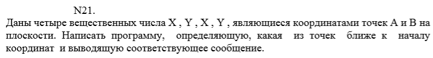
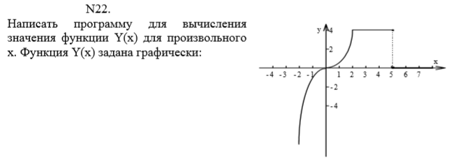
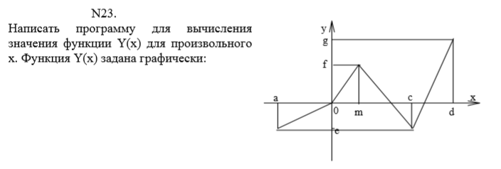
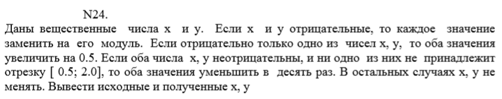
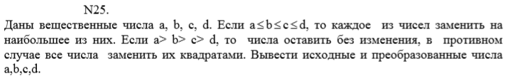
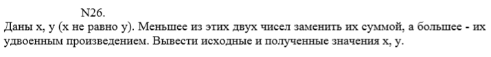
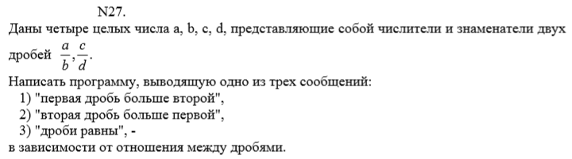
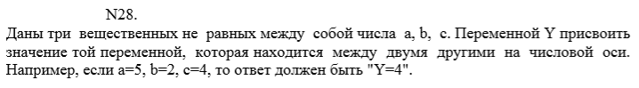
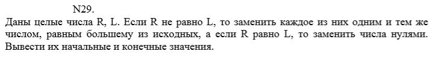
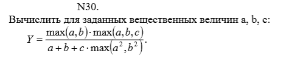
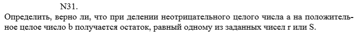
Задание 2. Изобразить блок-схему алгоритма и
составить программу решения задачи:
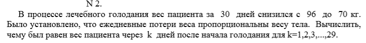
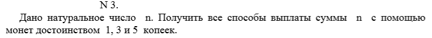
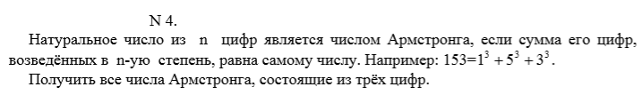
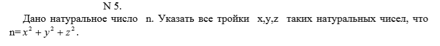
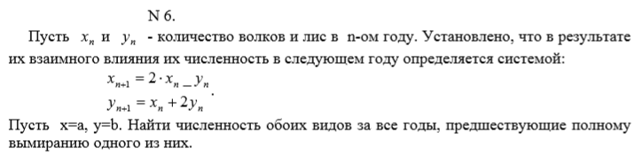
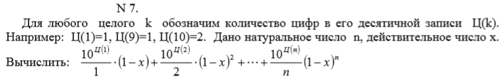
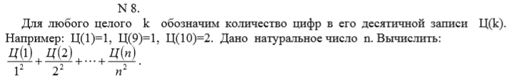
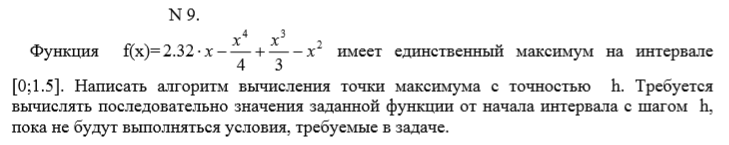
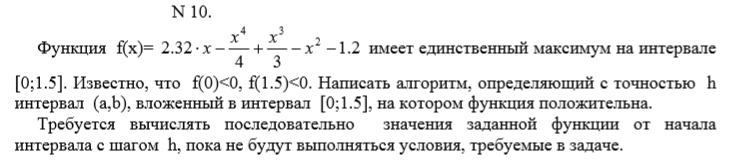
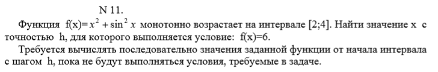
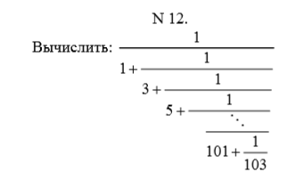
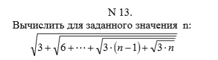
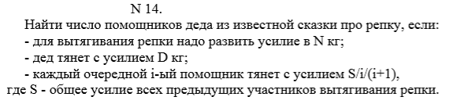
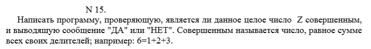
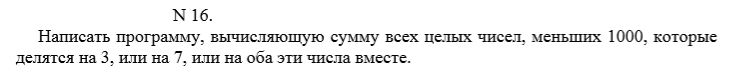
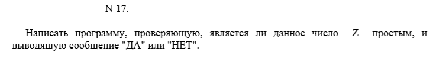
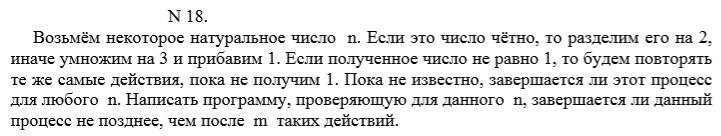
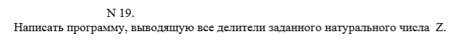
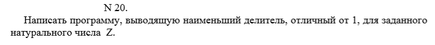
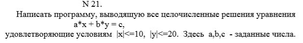
Поздравляю! У Вас есть шанс успеть оформить работу прямо сейчас, а дома только распечатать. Приступайте!